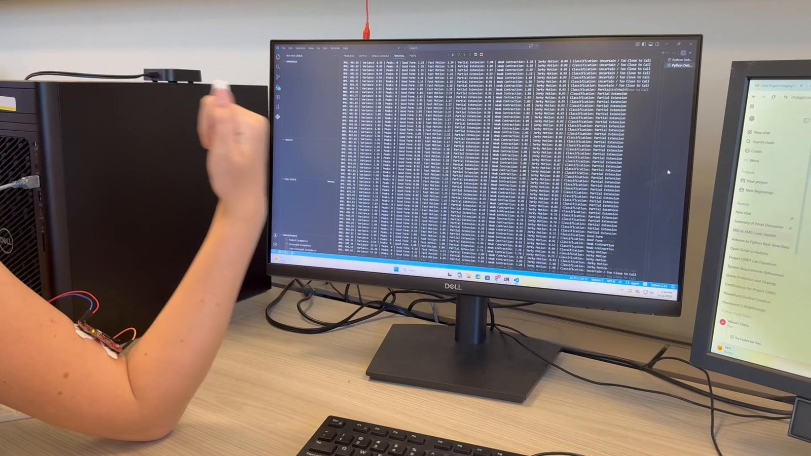
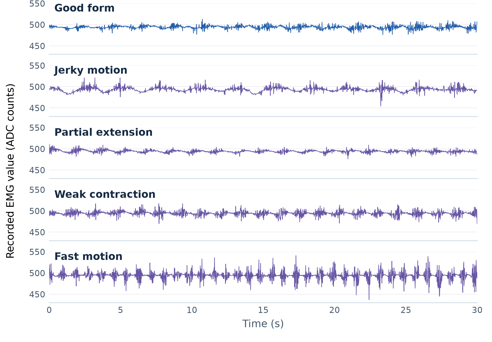
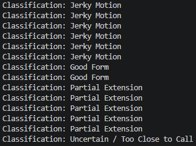
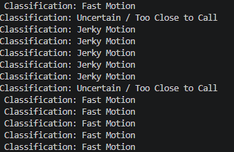

Project Overview
This project explored whether muscle-activation patterns could support feedback about exercise consistency and movement quality. The system recorded labeled sEMG trials, processed short windows in Python, extracted descriptive features, and returned a form label or an uncertain result when the closest profiles were too similar.

Recorded Trial Evidence

Acquisition & Analysis
- Capture muscle activity with a MyoWare sensor and surface electrodes.
- Verify serial readings through the Uno-compatible microcontroller.
- Log labeled trials to CSV for repeatable analysis.
- Apply windowing and moving-average smoothing in Python.
- Extract RMS, variance, and peak-count features.
- Compare features with class reference profiles using standardized distance.
- Return a form label or an uncertain result when the comparison is too close.
Classifier Output


Project Scope
This was an exploratory laboratory prototype. It demonstrated the complete acquisition-to-feedback workflow, but independent classification accuracy and generalization across users have not been established.
Future Improvements
- Collect repeated trials across more participants and sessions.
- Standardize electrode placement and contraction protocols.
- Evaluate the classifier with a held-out test set.
- Compare the distance-based approach with supervised machine learning models.